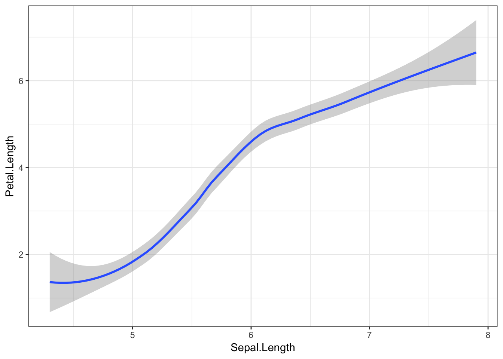
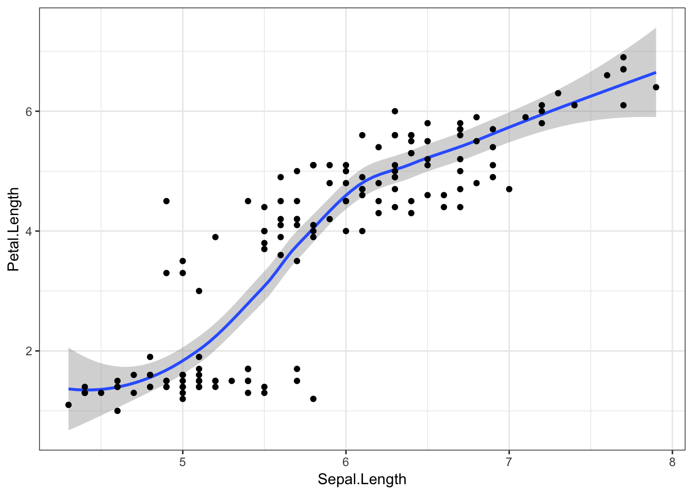
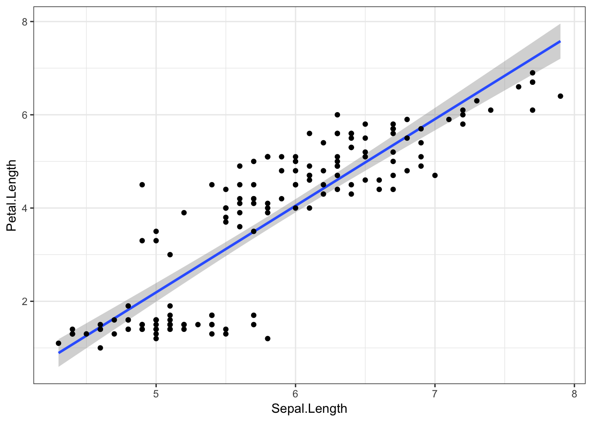
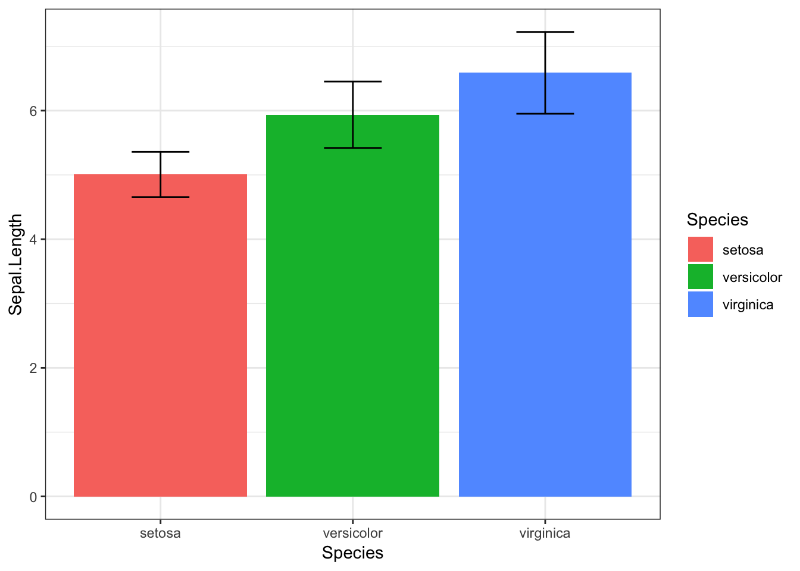
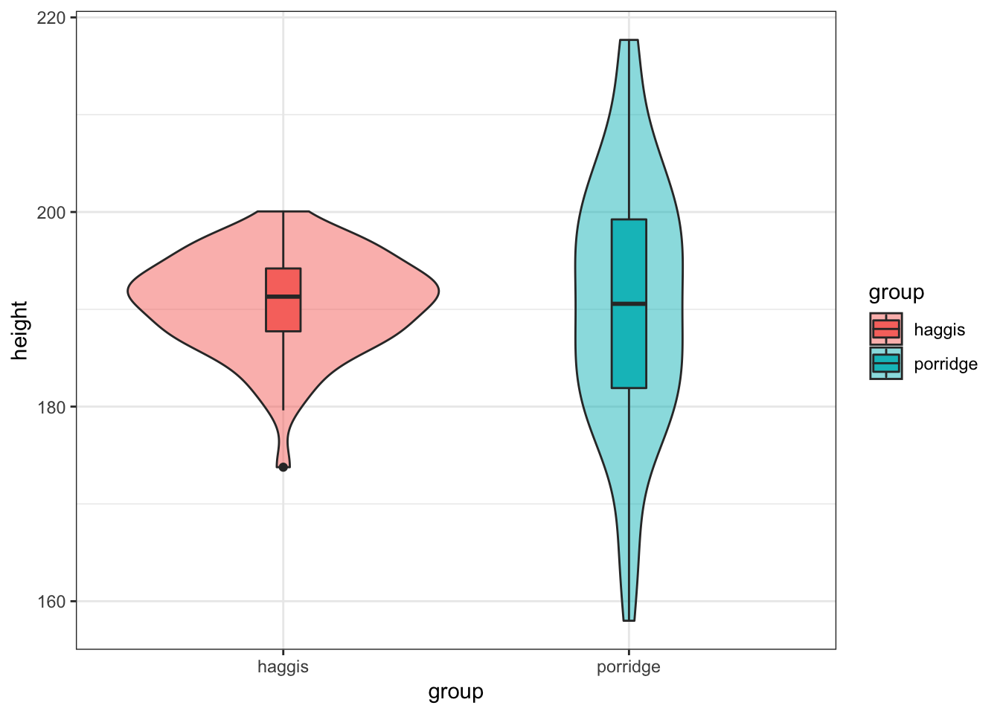
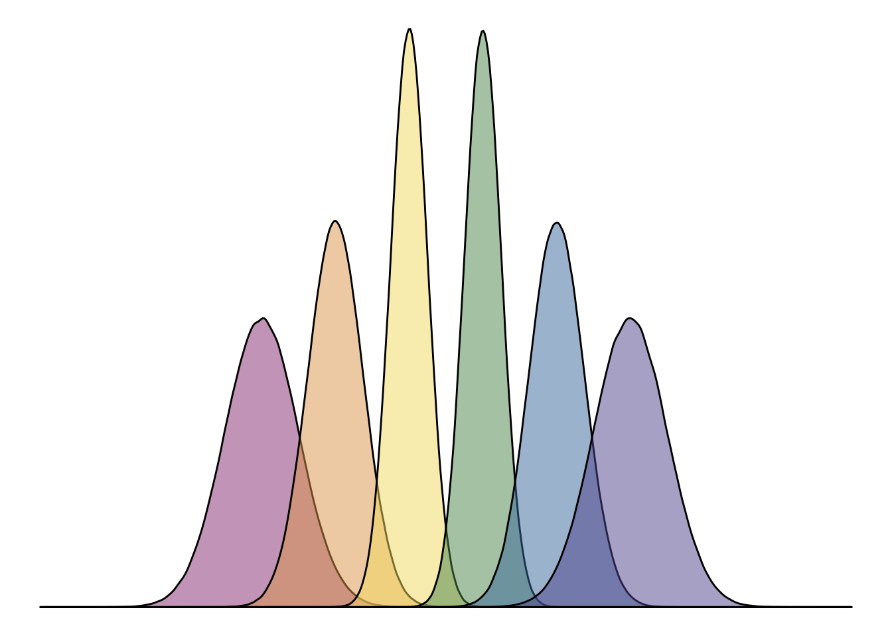

Quantitative Data Visualisation


Materials
Aim of this Session
This session will introduce you to visualising data in R, with the tidyverse package, ggplot2. This is a great package for creating beautiful and informative graphs with a small amount of simple code.
This session will be split into two sections. Firstly, we’ll cover the basics of ggplot2 syntax and functions. For the second half, we’ll go through some exercises to practice using ggplot2 to answer any questions we might have.
If you ever need a quick reminder about how to use ggplot2, I really recommend the following resources:
Introduction
Firstly, we’ll introduce ggplot2 to get our heads around the syntax and some common functions.
Setting Up
Since ggplot2 is part of the tidyverse, we can load it in like so:
library(tidyverse)ggplot2 Syntax
Here’s an example ggplot2 command, and associated output:
iris %>%
ggplot(aes(x = Sepal.Length, y = Petal.Length)) +
geom_point()
irisis the dataset. This is an example dataset built into R, with data from the Fisher (1936) paper, The use of multiple measurements in taxonomic problems. The data consists of measurements on the width and length of different iris flowers’ sepals and petals, as well as their species. Each row refers to a different flower.%>%feeds our data into theggplot()function.ggplot()creates the ggplot object, and tells the plot which variables are plotted on which axes using theaes()function. On the x axis, we’ve put flowers’ sepal length, and on the y axis, their petal length.geom_point()is a geom object which says what to actually do with all this information. Here, we tell ggplot2 to plot a point for each row (flower) in the dataset.
Geom Objects
Ggplot2’s “geom” objects say what features to actually add to the plot. As well as the geom_point() object above, there are many other possible geom objects. A full list of possible geoms is available on the ggplot2 function reference page, though most useful geoms can be seen on the ggplot2 cheatsheet.
Another nice geom we could use here is geom_smooth(). By default, this geom draws a smooth line estimated using the LOESS method (basically a curvy line of best fit). Other methods can be specified with the methods argument (see the ggplot documentation), but for now we’ll keep this default. Ggplot2 will also draw a grey shaded area showing the 95% confidence intervals (essentially, the certainty with which we can be sure the fit is correct across the x axis).
iris %>%
ggplot(aes(x = Sepal.Length, y = Petal.Length)) +
geom_smooth()## `geom_smooth()` using method = 'loess' and formula 'y ~ x'
Here’s where it gets really cool! Geoms are additive, which means we can put multiple geom objects in one plot. Let’s superimpose our data points on top of the line we just fit.
iris %>%
ggplot(aes(x = Sepal.Length, y = Petal.Length)) +
geom_smooth() +
geom_point()## `geom_smooth()` using method = 'loess' and formula 'y ~ x'
And finally, to visualise this relationship with a straight line (fit with a linear model), we can just add method = "lm" to the geom_smooth() function.
iris %>%
ggplot(aes(x = Sepal.Length, y = Petal.Length)) +
geom_smooth(method = "lm") +
geom_point()
Aesthetics
Aesthetics are specified with the aes() function, and tell ggplot2 what variables to plot, and which visual features should represent them. Many possible aesthetics are possible, but some of the main ones are:
xycolour(orcoloras both spellings are accepted by ggplot2)fillshape
As an example, let’s colour the points from our original plot by which species the flowers belong to, with the colour argument.
iris %>%
ggplot(aes(x = Sepal.Length, y = Petal.Length, colour = Species)) +
geom_point()
If we add other geom objects, you’ll notice that these features are also now coloured by Species.
iris %>%
ggplot(aes(x = Sepal.Length, y = Petal.Length, colour = Species)) +
geom_point() +
geom_smooth()## `geom_smooth()` using method = 'loess' and formula 'y ~ x'
Finally, we can again add method = "lm" to the geom_smooth() object to visualise these relationships with straight lines.
iris %>%
ggplot(aes(x = Sepal.Length, y = Petal.Length, colour = Species)) +
geom_point() +
geom_smooth(method = "lm")Visualising Distributions
Now that we’ve got the basics down, it would be good to introduce some key understandings about distributions. Whenever you have a numerical variable, you will have a range of possible values, often centred around an average.
Histograms
We can easily visualise what these distributions look like, for example with a histogram. A histogram simply breaks up a numerical variable into “bins”, and counts how many observations are in each bin. For instance, we might break up participants’ ages into bins of 5 years, and find that 4 participants were aged 20-24, 13 participants were aged 25-29, and so on.
Ggplot2 has a handy geom for this - geom_histogram(). Note that this function does not require a y variable, as this is automatically calculated. We can say how big we would like our bins to be with the binwidth argument.
iris %>%
ggplot(aes(x = Sepal.Width)) +
geom_histogram(binwidth = 0.1)
Here we can see that the bin from 3 to 3.1 contains the most flowers. The mean sepal width (3.06) is also in this bin.
Density Plots
Another way of visualising distributions is by plotting the variable’s density. Here, the y axis will reflect the likelihood that any observation, if chosen at random, will belong to that point on the x axis. A density plot of the irises’ sepal length would look like this:
iris %>%
ggplot(aes(x = Sepal.Length)) +
geom_density()Here we can see that most of the flowers have a sepal length towards the middle of the range.
We can also separate this distribution by the irises’ species using the fill aesthetic.
iris %>%
ggplot(aes(x = Sepal.Length, fill = Species)) +
geom_density()
Like this, it can be hard to see what’s going on when our distributions overlap. For instance, we don’t know much about the likelihood of finding a versicolor iris with a sepal length of 6.5. We can overcome this by making our density geom transparent, with the alpha argument. Here, the alpha value can range from 0 to 1, where 0 is invisible, and 1 is entirely opaque.
iris %>%
ggplot(aes(x = Sepal.Length, fill = Species)) +
geom_density(alpha = 0.5) # 50% transparency
This shows us that while there is overlap, different species of iris have different sepal lengths. If we found a flower with a sepal of 5cm, we could say it’s most likely to be a setosa.
Ban the Bar Graph
When visualising differences between groups in numerical values, people have historically used bar graphs. There is currently a shift taking place, with people moving away from bar graphs, and towards more informative visualisations.
Now that we understand distributions, can you see what would be the problem with a bar graph for comparing different iris species’ sepal length?
Note: I’ve not even given you the code for this graph, because I think you should avoid using it at all costs.
The bar graph shows us the average for each species, but doesn’t tell us much about the distribution of sepal length. It includes error bars for standard deviation, but even this can be misleading, as it looks as though there is almost no overlapsetosa and virginica, and the SD is symmetrical, whereas in fact, our data may be skewed, making values towards above the mean more likely than values below it (or vice versa).
Alternatives
So if we’re not going to use a bar graph, what should we use instead? Do not despair! Alternatives are out there, which can tell people much more about your data than a bar graph ever could.
One nice alternative is the violinbox plot.
The Violinbox Plot
iris %>%
ggplot(aes(x = Species, y = Sepal.Length, fill = Species)) +
geom_violin(alpha = 0.5) +
geom_boxplot(width = 0.2)
This consists of a boxplot, superimposed on a violin plot.
In the boxplot:
the central line reflects the median, which is often less vulnerable to skew in the data
the upper and lower parts of the box reflect the 25% and 75% quantiles, meaning this contains the central 50% of our data
the upper and lower “whiskers” extend as far as all values that are not outliers (observations that are distant from the majority of the data) would be expected to be (within 1.5 * interquartile range). If this sounds overly statistical, don’t worry. For now, just know that the boxplot gives us some useful summary statistics about the data and its distribution.
individual dots outside the whiskers are considered outliers (we can see there is at least one outlier for the virginica species)
In the violin plot, the width of the area indicates the density of the data at that point on the y axis. This is essentially a density plot turned on its side and reflected vertically.
Practice Questions
Okay, time to put our new-found enthusiasm for visualising quantitative data to good use!
The file, haggis.csv, includes some data from a (very made-up!) experiment, which looked at the life-time breakfast habits of people who either ate nothing but porridge for breakfast, and people who ate nothing but haggis. Each group had 64 participants (128 in total), and the experiment was designed to look at the heights of subjects, to see which breakfast food leads to greater height.
The plan here is that you can try to write your own scripts (in your own R Markdown document), and then click on the “Show Solution” button to check your answers. Bear in mind that there are often lots of ways of doing the same thing, so don’t be surprised if your code looks slightly different but still works!
1. Import Data
Once you’re in the correct working directory, the first step is to import the data from the file, haggis.csv (Hint: read_csv()).
Show Solution…
haggis <- read_csv("haggis.csv")
2. Visualise Height by Breakfast Group
Create a violinbox plot, showing how height differs between haggis and porridge eaters.
Show Solution…
haggis %>%
ggplot(aes(x = group, y = height, fill = group)) +
geom_violin(alpha = 0.5) +
geom_boxplot(width = 0.1)
3. Check the Distributions
Notice anything strange? We seem to have a much broader distribution of heights for porridge eaters, while the heights of haggis eaters seem to be much more consistent. What could be causing this? Well, as it happens, we also collected data on the music preferences of our subjects, because we’d read some previous literature suggesting relationships between these factors and height. Maybe these could help us answer our question! (Note that all our subjects we exclusively fans of either pop or classical music.)
Create two density plots to see:
- How the distribution of height differs between pop fans and classical fans.
Show Solution…
haggis %>%
ggplot(aes(x = height, fill = music_taste)) +
geom_density(alpha = 0.5)
- How the distribution of age differs between pop fans and classical fans.
Show Solution…
haggis %>%
ggplot(aes(x = age, fill = music_taste)) +
geom_density(alpha = 0.5)
4. Does Age predict Height?
So, it looks like height differs slightly between our pop lovers and classical aficionados, but even more clearly, pop fans seem to be much younger than classical fans. We might wonder, therefore, whether age predicts height.
Draw a scatter plot to see how age predicts height. Add a line showing the linear relationship between age and height.
Show Solution…
haggis %>%
ggplot(aes(x = age, y = height)) +
geom_point() +
geom_smooth(method = "lm")
5. Does Age interact with Music Taste?
Okay, there’s some degree of relationship. Now, if age explains the weird distribution of heights we saw for porridge eaters, we might see a difference in the age-height relationship between haggis and porridge eaters.
Recreate the previous graph, but colour the points and line by participants’ breakfast habits.
Show Solution…
haggis %>%
ggplot(aes(x = age, y = height, colour = group)) +
geom_point() +
geom_smooth(method = "lm")
6. Does Music Taste interact with Breakfast
Finally, it might be that the relationship between breakfast habits and height is mediated by music taste in some way.
Create a violinbox plot as you did in Practice Question 2, but split by music taste as well as breakfast group.
This is meant to be a tricky question, but here are some hints:
You can specify different variables as the
xandfillaesthetics- By default, the boxplots won’t overlay the violin plots as you might expect, but you can fix this with some googling (as I did). To work this out I did a quick google and found these links which you might find useful:
- A Google Search (stackoverflow results on google are always the best thing in the world)
ggplot2 reference (have a look through the examples they give)
Show Solution…
haggis %>%
ggplot(aes(x = group, y = height, fill = music_taste)) +
geom_violin(alpha = 0.5) +
geom_boxplot(width = 0.2, position = position_dodge(width = 0.9))
Conclusion
So, after exploring our data in some real depth, it looks like for porridge eaters, your taste in music predicts your height. For haggis eaters, however, your taste of music does not seem to predict your height at all. This might also be related to your age in some way, but we’d need some statistical analyses to disentangle these properly, such as a general linear model.
This was very exploratory, and we can’t say anything about the causality, but it seems that for some reason or other, porridge eaters who love pop music are strangely tall, though porridge eaters who love classical music seem to be somewhat shorter.
This data is of course very made up, but hopefully now you can see the advantages of visualising data flexibly with code, rather than just looking at a bar graph with error-bars.
Bonus
Labels
The main types of labels you can add to a ggplot2 plot are for the:
- title
- subtitle
- x axis
- y axis
- caption
Labels can be added to a plot with the labs() function like so:
haggis %>%
ggplot(aes(x = group, y = height, fill = music_taste)) +
geom_violin(alpha = 0.5) +
geom_boxplot(width = 0.2, position = position_dodge(width = 0.9)) +
labs(
title = "Eat Yer Porridge",
subtitle = "The Effect of Breakfast Habits on Height",
x = "Breakfast Group",
y = "Height (cm)",
caption = "Based on 2019 Data from the Silver Spoon Porridge Company Survey"
)Themes
ggplot2 allows the use of various themes, which can be used to quickly change the appearance of your plots. Themes can be added to a plot by simply adding a theme_... function to the code. For example, to apply the dark theme to your plot, you could use theme_dark():
haggis %>%
ggplot(aes(x = group, y = height, fill = music_taste)) +
geom_violin(alpha = 0.5) +
geom_boxplot(width = 0.2, position = position_dodge(width = 0.9)) +
theme_dark()
A full list of ggplot2 themes is available here.
Saving to file
When we’ve finished crafting our beautful ggplot2 figure, we can save the plot to file with the ggsave() function. This lets us save our figure as a .png image file, with the desired height in mm, cm, or inches.
The following code saves the last plot rendered to a file called my_pretty_plot.png.
ggsave("my_pretty_plot.png", width = 9, height = 7, units = "in")Logos
Here’s a really cool fun fact! The logo for Hack Your Data Beautiful (as proudly displayed on the home page) was in fact made in ggplot2, with the geom_density() function! Here’s some reproducible code that we used to generate it:
# how many data points for each of the density plots
n <- 1e6
# where on the x axis each density plot will be
means <- c(40, 60, 80, 100, 120, 140)
# how wide each density plot will be
sds <- c(10, 7.5, 5, 5, 7.5, 10)
# colours from the psyTeachR colour scheme
psyteachr_colours_vec <- c("#983E82", "#E2A458", "#F5DC70", "#59935B", "#467AAC", "#61589C")
tibble(
grp = rep(LETTERS[1:6], each = n),
val = rep(means, each = n) +
rnorm(n*6, 0, rep(sds, each = n))
) %>%
ggplot(aes(val, fill = grp)) +
geom_density(alpha = 0.5, show.legend = F, trim = FALSE) +
scale_fill_manual(values = psyteachr_colours_vec) +
xlim(-20,200) +
theme_void()
Is there anything ggplot2 can’t do!?